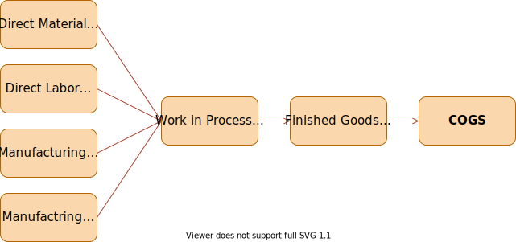
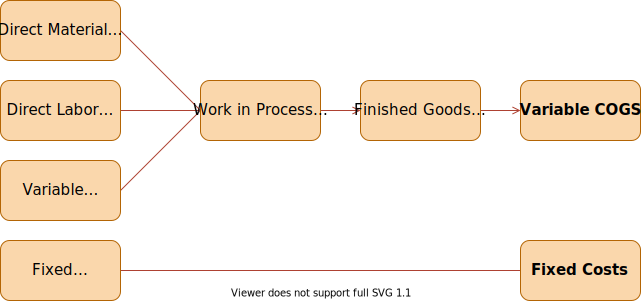

MGTP 495
Mario Milone
Cost Inclusion
What manufacturing items are charged to products?
Cost measures
What dollar amounts are charged for these items?
Cost Accumulation
How are the dollar charges accrued and assigned to individual products?
Assign all manufacturing costs to a product (all Product Costs).
Full costing includes both fixed and variable manufacturing overhead.
Also referred to as Full Absorption Costing.
Standard for calculating Cost of Goods Sold (COGS) in financial reporting.

| Sales Revenue | |
| - | Cost of Good Sold |
| = | Gross Margin |
| - | Non-manufacturing cost (SG&A) |
| = | Operating Profit |
Considers what is not assigned to a product (Period Costs)
Variable costing separates fixed and variable overheads
Preferred for internal reports - Takes into account the variable SG&A

| Sales Revenue | |
| - | Variable COGS |
| - | Variable SG&A |
| = | Contribution Margin |
| - | Fixed Manufacturing Cost |
| - | Fixed Non-manufacturing cost |
| = | Operating Profit |
| Type | ||
|---|---|---|
| Administrative Costs | 44,300 | SG&A |
| Manufacturing Building Dep. | 27,000 | OH |
| Indirect Material and Supplies | 6,300 | OH |
| Sales Commissions | 15,200 | SG&A |
| Direct Material | 21,700 | DM |
| Direct Labor | 35,600 | DL |
| Supervisory and Indirect Labor | 14,400 | OH |
| Property taxes, manufacturing plant | 8,400 | OH |
| Plant, Utilities and Power | 23,500 | OH |
| Sales Revenue | 210,400 |
Let’s aggregate all of this
| Type | |
|---|---|
| Direct Labor | 35,600 |
| Direct Material | 21,700 |
| Manufacturing OH | 79,600 |
| Non-manufacturing OH (SG&A) | 59,500 |
Income Statement with Full Costing
| Sales | 210,400 |
| Cost of Goods Sold | 136,900 |
| Gross Margin | 73,500 |
| SG&A | 59,500 |
| Net Income Before Taxes | 14,000 |
A furniture company produced 400 chairs during March 2019 and sold 300 of them.
| Costs | |
|---|---|
| Manufacturing OH (fixed) | 9,000 |
| Labor | 7,000 |
| Materials | 5,000 |
| SG&A (fixed) | 1,000 |
| Selling Price | 60 |
| Sales Revenue | 18,000 |
| COGS (300/400)*21,000 | 15,750 |
| Gross Margin | 2,250 |
| SG&A | 1,000 |
| Income | 1,250 |
| Sales Revenue | 18,000 |
| Variable COGS (300/400)*12,000 | 9,000 |
| Variable SG&A | 0 |
| Contribution Margin | 9,000 |
| Fixed OH | 9,000 |
| Fixed SG&A | 1,000 |
| Income | (1000) |
Actual Costing
Normal Costing
Standard Costing
Allocate OH after all overhead costs are known (e.g. at the end of the year).
Applied Cost = Actual DM + Actual DL + Actual Var. OH + Actual FOH if Full Costing
Actual Var. OH = VOH rate x Volume of driver for product
$$\text{VOH rate} = \frac{\text{Actual OH Costs}}{\text{Volume of Driver of OH used in production}}$$
Approximate the product costs
Cost = Actual DM + Actual DL + Normal Var. OH + Normal FOH if Full Costing
Normal Var. OH = Predicted VOH rate x Actual activity level
$$\text{Estimated OH Costs} = \frac{\text{Predicted VOH rate}}{\text{Estimated activity level of driver}}$$
Uses predetermined costs for all aspects of the product
Cost = Std. DM + Std. DL + Std. VOH + Std. FOH if Full Costing
Std. DM = Std. DM cost ∗ Std. amount of DM per unit ∗ actual # of units produced
Std. DL = Std. DL cost ∗ Std. amount of DL per unit ∗ actual # of units produced
Std. VOH = Std. VOH cost ∗ Std. amount of VOH per unit ∗ actual # of units produced
Std. FOH = Std. FOH cost ∗ Std. amount of FOH per unit ∗ actual # of units produced
| Actual | Normal | Standard | |
|---|---|---|---|
| Direct Costs | Actual Rate Actual Input Actual Units |
Actual Rate Actual Input Actual Units |
Standard Rate Standard Input Actual Units |
| Indirect Costs | Actual Rate Actual Input Actual Units |
Budgeted Rate Actual Input Actual Units |
Standard Rate Standard Input Actual Units |
The costs are
| Estimate | Actual | |
|---|---|---|
| VOH | $8 per DLH | $2,080 |
| FOH | $600 | $900 |
| DL Hours | 200 hours | 210 hours |
| DL Dollars | $11.25 per hour | $ 3,778 |
| DM | $2,005 | $2,005 |
| Output | 100 Chair | 100 Chairs |
Predicted FOH Rate for Normal Costing: $\frac{600}{200*11.25} = 0.267$
| Actual Costing | Normal Costing | Difference from Actual | |
|---|---|---|---|
| DM | $2,005 | $2,005 | |
| DL | $3,778 | $3,778 | |
| VOH | $2,080 | (\$8*210) $1,680 | Under-applied ($400) |
| FOH | $900 | (0.267*\$3,778) $1,007 | Over-applied $107 |
| Total Costs | $8,763 | $8,470 | |
| # Units Produced | 100 | 100 | |
| Unit Cost | $87.63 | $84.70 | |
| Net adjustment to COGS | $293 |
How about Standard Costing?
| Standard Cost of DM | Wood Fabric / Foam |
\$2 per sq.ft. $1 per yard |
| Standard Amount of DM | Wood Fabric / Foam |
10 sq.ft. 8 yards |
| Standard DL Rate | $11.25 per hours | |
| Standard VOH Rate | $8 per DL hours | |
| Standard FOH Rate | $0.267 per DL hours | |
| Standard DL per chair | (200 hours / 100 chairs) | 2 hours |
What is the standard cost for one chair using Full Costing?
Process Costing aggregates all manufacturing costs together and divides by one measure of production
Considers a mass of similar units
Spreads the total cost over the number of units produced during the period
How to track what is produced?
Units produced = Complete units + f(incomplete units)
Suppose that - 20,000 units are completed. - 5,000 units are in process at the end of the period.
What is the value of the ending FG (Finished Goods) inventory and the WIP (Work In Process) inventory?
Assume that each incomplete unit is 50% complete
| # of equivalent units completed | 22,500 | 20,000 + 50% * 5,000 |
| Cost per equivalent unit | $9.33 | 210,000 / 22,500 |
| COGM | $186,667 | 20,000 * $9.33 |
| WIP | $23,333 | 2,500 * $9.33 |
Assume now that
| # of equivalent units completed (DM) | 25,000 | 20,000 + 100% * 5,000 |
| Cost of DM per equivalent unit | $4 | $100,000 / 25,000 |
| # of equivalent units completed (DL) | 22,500 | 20,000 + 50% * 5,000 |
| Cost of DL per equivalent unit | $2.22 | $50,000 / 22,500 |
| # of equivalent units completed (OH) | 22,500 | 20,000 + 50% * 5,000 |
| Cost of OH per equivalent unit | $2.67 | $60,000 / 22,500 |
| COGM | $177,800 | 20,000 * (\$4 + \$2.22 + $2.67) |
| WIP | $32,200 | 5,000 * \$4 + 2,500 * (\$2.22 + $2.67) |
No perfect solution, just multiple trade-offs.